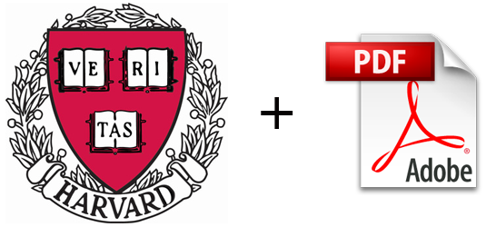

Get That Paper!
In Safari or in Chrome: drag the link above to your Bookmarks Bar.
In Firefox: right-click the link above and select "Bookmark this Link", and place it in your Bookmarks Toolbar.
In Internet Explorer: go get a real browser, and then follow the instructions above.
To use it: when you're on a journal website for an article behind a paywall, click the bookmarklet link you saved, log-in to your Harvard account, and voilà!